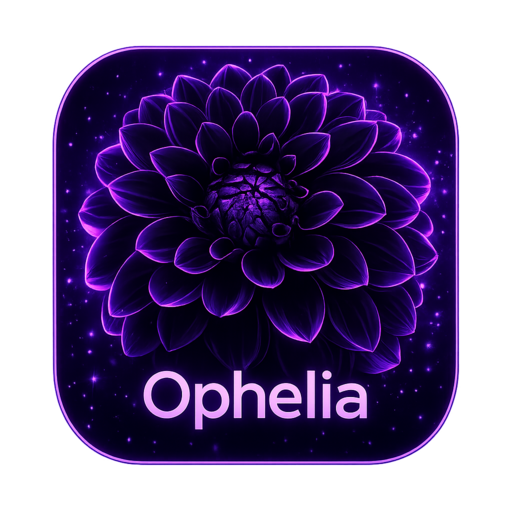

Ophelia Get the appOphelia is a beautiful, offline Mac app for tracking your projects, notes, sketches and ideas — all stored locally on your machine. No cloud, no accounts, no subscriptions.
A quiet, focused workspace for your projects, notes, sketches, and references — all in one place.
Drop images, videos, shapes, sticky notes, and tables anywhere on the page. Drag, resize, rotate — like a whiteboard, but for your projects.
Powered by BlockNote — headings, lists, checklists, quotes, code blocks, font choices, line spacing, and a familiar slash menu.
Freehand pen with adjustable color and width, plus a stroke eraser. Sketch on top of any page like you would on real paper.
Full editable tables with row/column controls, plus solid, dashed, and dotted line tools — perfect for diagrams and rough planning.
Each project can have any number of pages, each with its own background color and content — pages stay scoped, no bleed-through.
Everything is stored in a SQLite file on your computer. No accounts, no servers, no telemetry. Your notes never leave your machine.
Every keystroke is debounced and persisted. Close the lid, kill the app, lose power — nothing is lost.
Need to share or back up? One click exports any page to a clean Markdown file you can paste anywhere.
Free forever. No account required. Open the installer, drag to Applications, and you're done. Windows & Linux versions are on the roadmap.
Requires macOS 11 (Big Sur) or later
Source is on GitHub — you can view the code or browse all releases.
Yes. There is no paid tier, no trial, no account. The whole app runs locally on your Mac.
Everything lives in a single SQLite file in your Mac's standard app-data folder: ~/Library/Application Support/Ophelia/. You can back it up, sync it through iCloud/Dropbox, or delete it any time.
If you see this warning, it means the build you downloaded isn't notarized yet. To open it anyway: right-click the app → Open → confirm. Full Apple notarization is on the roadmap.
An iPad version is on the roadmap. Windows and Linux builds may follow. The Mac version is the first and primary release.
For now, just download the latest installer from this page and re-install — your data is never touched. Auto-update is planned for a future release.
Not natively — but because everything lives in a single folder, putting it inside iCloud Drive, Dropbox, or Syncthing works well. Just don't run two copies at the same time.
Please open an issue on GitHub Issues. Reproducible bug reports and screenshots are appreciated!